10 работ · схемы, формулы, метод «предскажи → наблюдай → объясни»
Иллюстрации сняты прямо из симулятора (режим --capture).
Версия 2026-06-15. Решатель: MNA (узловой анализ), транзиент — companion-модели.
Как работать с практикумом
Каждая работа открывает одну идею. Симулятор честно решает цепь (метод узловых
потенциалов), а вы проверяете свою интуицию до того, как увидите ответ.
Метод «предскажи → наблюдай → объясни»
Предскажи. Прежде чем запускать симуляцию — запиши свой прогноз (ток, напряжение,
что ярче/быстрее). Это обязательный шаг: без него мозг не учится.
Наблюдай. Открой демо-схему в симуляторе, запусти, сними показания.
Объясни. Совпало? Если нет — найди, какое допущение было неверным. Расхождение
ценнее совпадения.
Условные обозначения
Формула в рамке: V = I·R
Красным — типичное заблуждение, по которому бьёт работа.
Жёлтый блок — предсказание; синий — наблюдение; зелёный — объяснение.
Три картины одной цепи
Симулятор показывает одну и ту же физику в нескольких метафорах. В практикуме используются:
электрическая схема (стрелки тока, карта потенциала) и механическая аналогия
(цепь-цепочка: ток = скорость звеньев, сопротивление = тормоз, конденсатор = пружина,
катушка = маховик). Аналогии помогают «пощупать» абстракцию.
Содержание
Закон Ома
Делитель напряжения
Нагруженный делитель: эффект нагрузки
Мост Уитстона
Зарядка конденсатора (RC, постоянная времени)
Нарастание тока в катушке (RL)
Колебательный контур RLC
Диод: односторонняя проводимость
Полуволновой выпрямитель (AC → DC)
RC-фильтр нижних частот
Работа 1 Закон Ома
Связь тока, напряжения и сопротивления на одном резисторе.
Цель
Убедиться, что ток через резистор прямо пропорционален напряжению и обратно — сопротивлению.
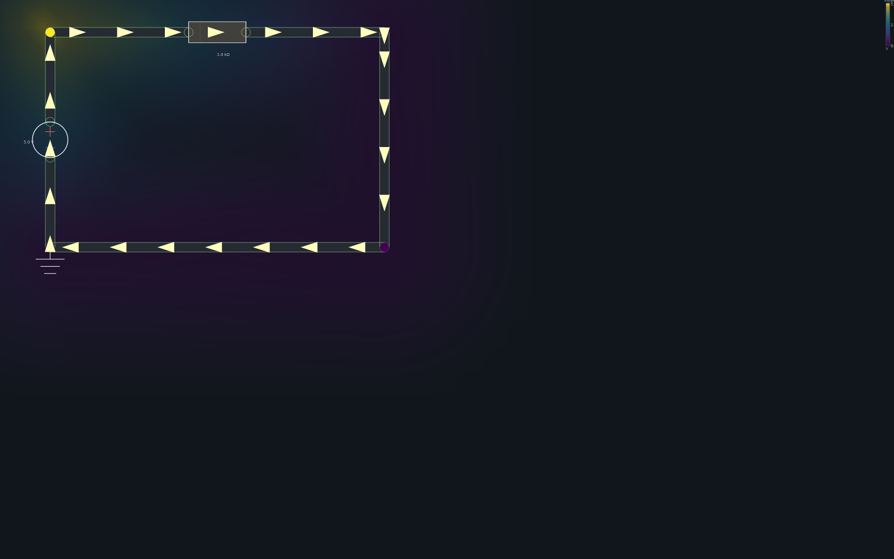
Источник 5 В и резистор 1 кΩ. Стрелки — направление тока, цвет провода — потенциал.
Теория
I = V / R · V = I·R · P = V·I = I²·R
Предскажи. При V=5 В и R=1 кΩ — чему равен ток? А если удвоить R до 2 кΩ?
Наблюдай. Открой демо «source + resistor», сними I с инспектора. Поменяй R в редакторе элемента.
Объясни.I = 5/1000 = 5 мА; при 2 кΩ — 2.5 мА (вдвое меньше).
Заблуждение: «источник даёт фиксированный ток». Нет — источник держит напряжение, а ток определяет нагрузка.
Работа 2 Делитель напряжения
Два последовательных резистора делят напряжение пропорционально сопротивлениям.
Цель
Понять, что в последовательной цепи ток общий, а напряжение делится.
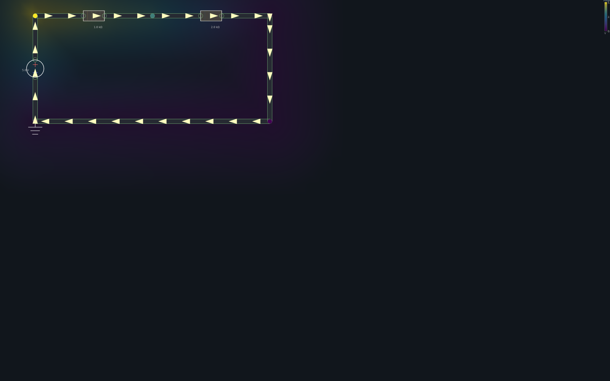
Делитель: два резистора последовательно, выход — со средней точки.
Теория
Vout = V · R₂/(R₁+R₂) · ток один на всю ветвь: I = V/(R₁+R₂)
Предскажи.V=5 В, R₁=R₂=1 кΩ — сколько на выходе? А если R₂=4 кΩ?
Наблюдай. Демо «resistor divider». Сними потенциал средней точки. Меняй R₂.
Объясни. Поровну → 2.5 В; при R₂=4 кΩ → 5·4/5 = 4 В.
Заблуждение: «ток расходуется на первом резисторе». Нет — ток через оба одинаков; «расходуется» (падает) напряжение.
Работа 3 Эффект нагрузки
Почему идеальный делитель «проседает» под реальной нагрузкой.
Цель
Увидеть, что подключение нагрузки параллельно плечу делителя снижает выходное напряжение.
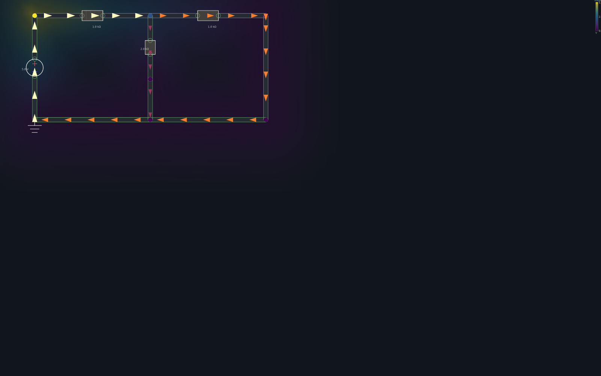
Делитель R₁/R₂ с нагрузкой RL параллельно R₂.
Теория
Нагрузка параллельна R₂: R₂∥RL = R₂·RL/(R₂+RL), и эта величина меньше R₂ → выход падает.
Предскажи. Без нагрузки Vout≈3.33 В (R₁=1к, R₂=2к). Что станет с Vout, когда повесим RL=1 кΩ — вырастет, упадёт, не изменится?
Наблюдай. Демо «loaded voltage divider». Сравни выход с расчётом без нагрузки.
Объясни. R₂∥RL = 2000·1000/3000 ≈ 667 Ω → Vout = 5·667/(1000+667) ≈ 2.0 В. Просадка.
Заблуждение: «делитель даёт фиксированный выход независимо от нагрузки».
Работа 4 Мост Уитстона
Точное измерение через баланс, а не абсолютное отсчёт.
Цель
Понять условие баланса моста и почему через «гальванометр» течёт ток при разбалансе.
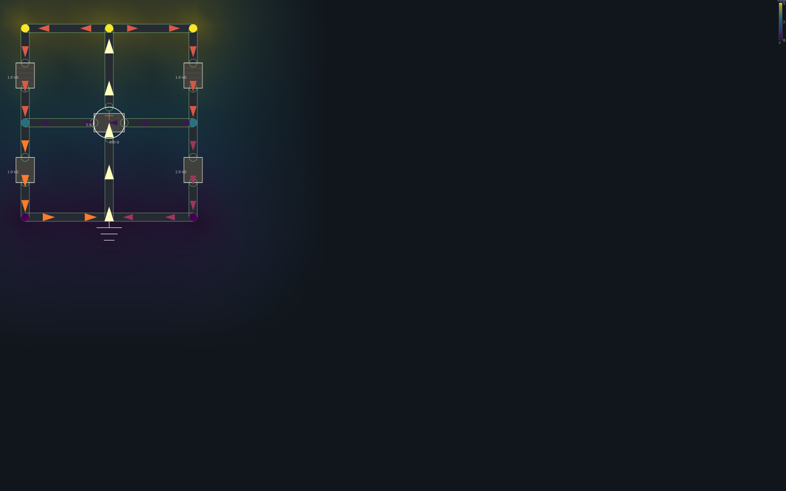
Четыре плеча R₁..R₄ и мостовой резистор Rg между средними точками.
Теория
Баланс (ток через Rg равен нулю): R₁·R₄ = R₂·R₃. При нарушении — появляется ток через мост.
Предскажи. R₁=R₂=R₃=1 кΩ, R₄=2 кΩ. Сбалансирован ли мост? Потечёт ли ток через Rg?
Наблюдай. Демо «Wheatstone bridge». Сними ток через Rg. Сделай R₄=1 кΩ — что изменится?
Объясни. 1·2 ≠ 1·1 → разбаланс → ток через Rg. При R₄=1 кΩ: 1·1 = 1·1 → баланс → ток нулевой.
Заблуждение: «мост всегда измеряет напряжение». Он измеряет отношение сопротивлений по нулю тока.
Работа 5 RC · постоянная времени
Конденсатор заряжается не мгновенно, а по экспоненте.
Цель
Измерить постоянную времени τ и связать её с R и C.
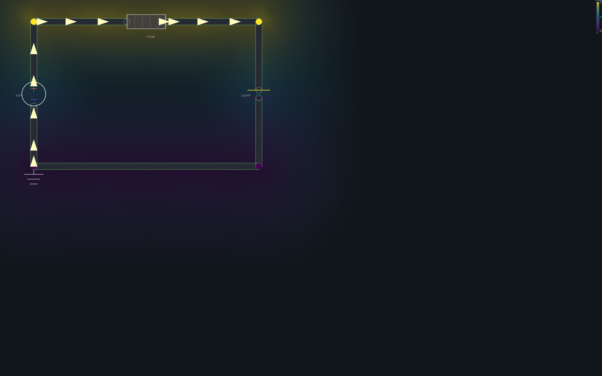
Электрическая: источник → R → C.
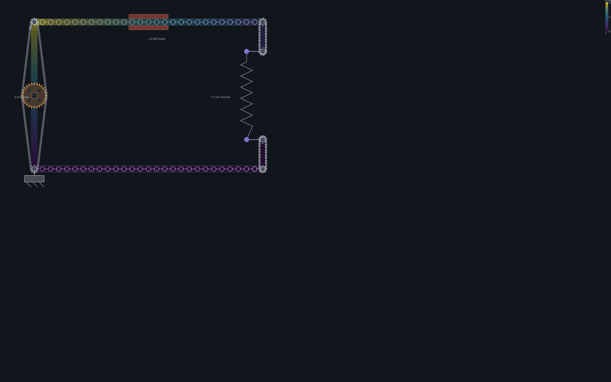
Механика: конденсатор = пружина (заряд = сжатие).
Теория
Vc(t) = V·(1 − e−t/τ) · τ = R·C. За τ заряжается до ≈63 %, за 5τ — почти полностью.
Предскажи. R=1 кΩ, C=1 мФ. Чему равна τ? Сколько времени до ≈63 % от 5 В?
Наблюдай. Демо «RC charging». Запусти, следи за Vc(t) на осциллографе. В механическом виде смотри, как пружина плавно сжимается.
Объясни.τ = 1000·0.001 = 1 с; до 63 % (≈3.16 В) — ровно за 1 с.
Заблуждение: «конденсатор заряжается мгновенно» или «хранит напряжение, а не заряд». Хранит заряд Q = C·V.
Работа 6 RL · инерция тока
Катушка сопротивляется изменению тока — ток нарастает плавно.
Цель
Понять, что индуктивность задаёт инерцию току, и измерить τ = L/R.
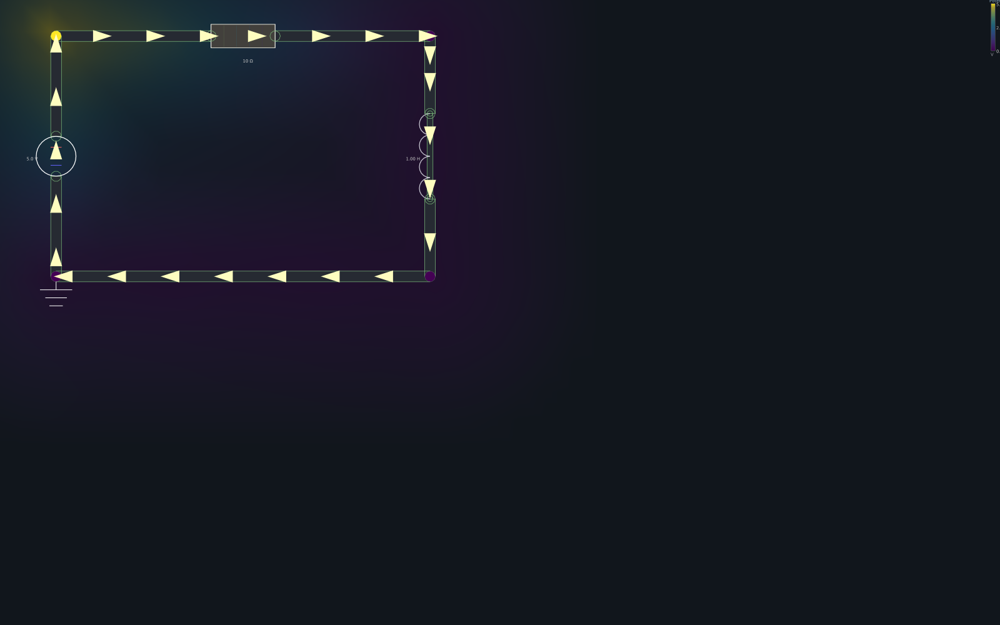
Электрическая: источник → R → L (катушка — витки).
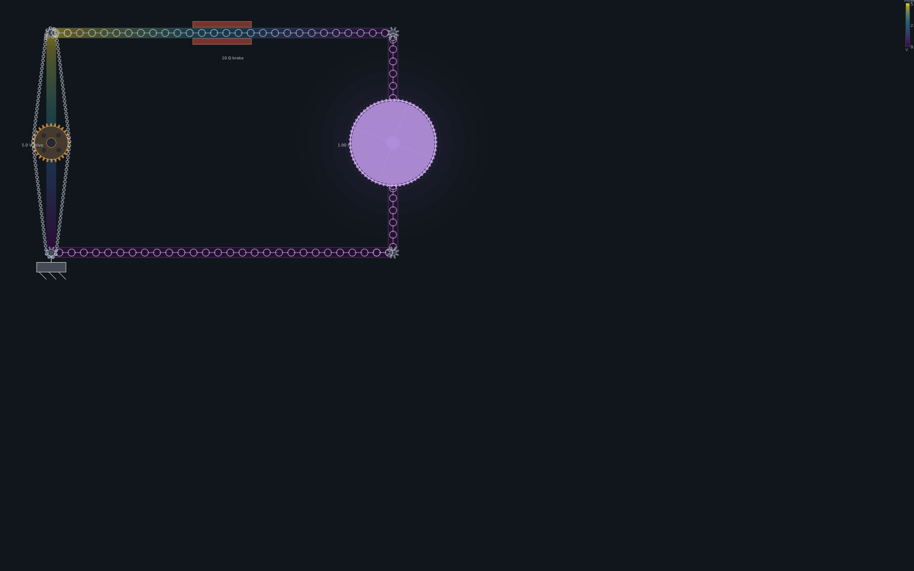
Механика: катушка = маховик (ток = момент импульса). Зубчатый обод сцеплен с цепью.
Предскажи. V=5 В, R=10 Ω, L=1 Гн. Конечный ток? τ? Мгновенно ли он установится?
Наблюдай. Демо «RL current rise». Следи за током. В механике маховик-катушка раскручивается постепенно — это и есть инерция тока.
Объясни.I∞ = 5/10 = 0.5 А; τ = 1/10 = 0.1 с. Ток нарастает, а не прыгает.
Заблуждение: «ток в катушке появляется сразу». Маховик не раскрутить мгновенно.
Работа 7 Колебательный контур RLC
Конденсатор и катушка вместе дают колебания — энергия перетекает туда-обратно.
Цель
Увидеть затухающие колебания и связать их частоту с L и C.
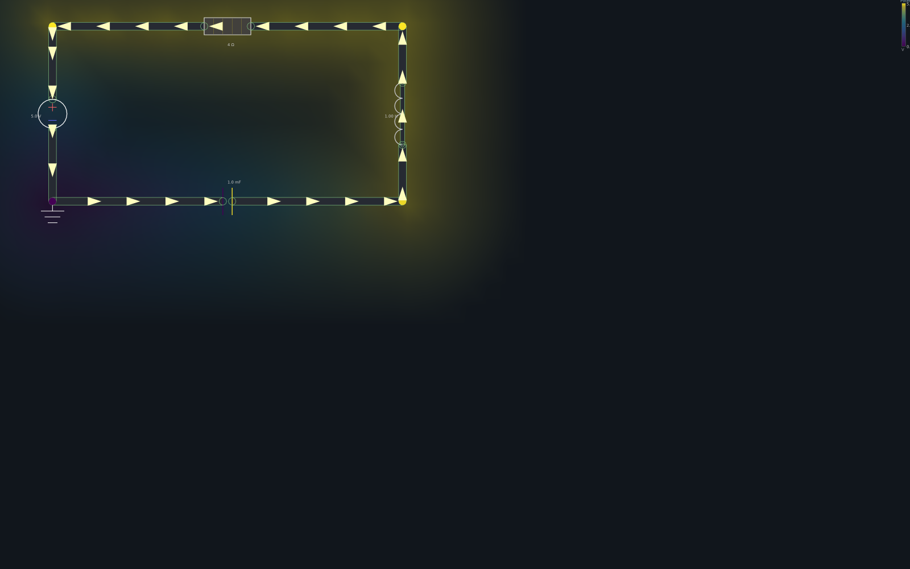
Последовательный RLC во время переходного процесса (t ≈ 1 с).
Теория
Частота собственных колебаний: f₀ = 1/(2π·√(L·C)). Резистор гасит колебания (затухание).
Предскажи. Что будет с током после включения: монотонно установится или «зазвенит»? От чего зависит частота звона?
Наблюдай. Демо «RLC series». Следи за током/напряжением на осциллографе — увидишь затухающую синусоиду. В механике пружина (C) и маховик (L) раскачивают цепь.
Объясни. Энергия колеблется между полем конденсатора (½CV²) и движением маховика (½LI²); R забирает её в тепло → амплитуда падает.
Заблуждение: «реактивные элементы просто замедляют». Вместе они колеблют.
Работа 8 Диод
Элемент, пропускающий ток только в одну сторону — с порогом.
Цель
Понять одностороннюю проводимость и прямое падение ≈0.7 В.
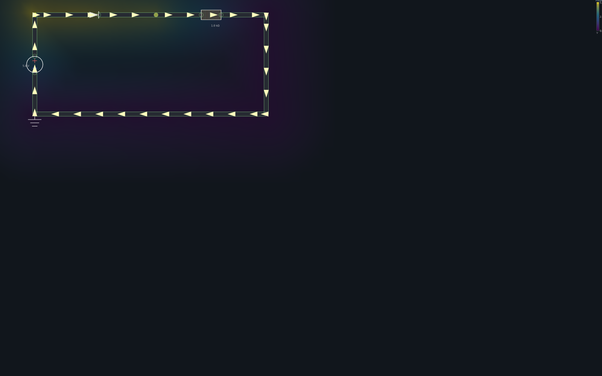
Диод последовательно с резистором.
Теория
Прямое смещение (анод «+»): проводит, падение Vf ≈ 0.7 В. Обратное: не проводит (≈ обрыв).
Предскажи. Источник 5 В через диод на резистор 1 кΩ. Какое напряжение упадёт на резисторе — 5 В или меньше? Если перевернуть диод — потечёт ли ток?
Наблюдай. Демо «diode + resistor». Сними падение на диоде и на резисторе. Переверни диод (поменяй узлы).
Объясни. На резисторе ≈5 − 0.7 = 4.3 В (≈4.3 мА). Перевёрнутый диод — тока почти нет.
Заблуждение: «диод — идеальный ключ без потерь». Есть порог ≈0.7 В.
Работа 9 Полуволновой выпрямитель
Как из переменного напряжения получить пульсирующее постоянное.
Цель
Увидеть, что диод срезает отрицательную полуволну, оставляя ток в одну сторону.
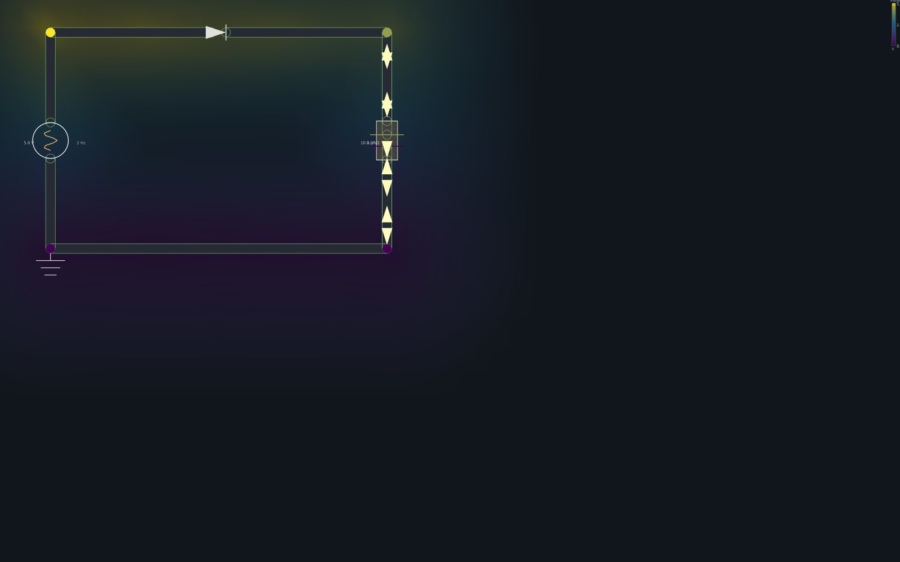
Положительная полуволна: диод проводит, ток течёт.
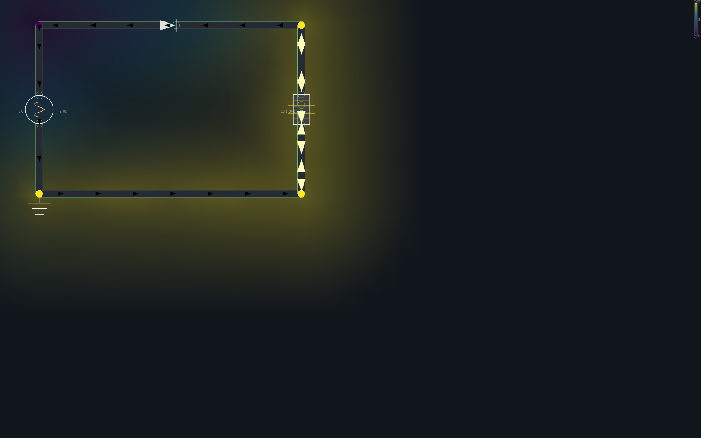
Отрицательная полуволна: диод заперт, ток не течёт.
Теория
Источник v(t) = A·sin(2π·f·t). Диод пропускает только v > Vf → на нагрузке — однополярные импульсы. Конденсатор сглаживает.
Предскажи. На входе синус ±5 В, 2 Гц. Каким будет напряжение на нагрузке — синус, модуль синуса, или только положительные «горбы»?
Наблюдай. Демо «AC half-wave rectifier». Сравни два момента времени (положительная и отрицательная фаза) — на отрицательной диод заперт.
Объясни. Выход — только положительные полупериоды (минус срезан). Среднее > 0 → есть постоянная составляющая.
Заблуждение: «переменный ток нельзя превратить в постоянный без сложной электроники».
Работа 10 RC-фильтр НЧ
Та же RC-цепь, но под переменным сигналом — становится частотным фильтром.
Цель
Понять частоту среза и почему высокие частоты ослабляются сильнее.
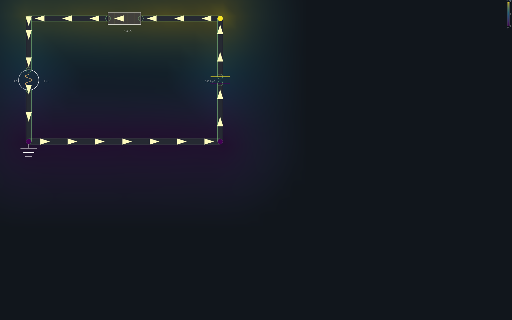
RC-фильтр нижних частот под синусоидальным источником.
Теория
Частота среза: fc = 1/(2π·R·C). Ниже fc сигнал проходит, выше — слабеет (на fc выход ≈0.71 от входа).
Предскажи. R=1 кΩ, C=100 мкФ. Чему равна fc? При входе 2 Гц выход будет почти равен входу или заметно ослаблен?
Наблюдай. Демо «RC low-pass filter (AC)». Сравни амплитуду на C (выход) с амплитудой источника.
Объясни.fc = 1/(2π·1000·100·10⁻⁶) ≈ 1.59 Гц. Вход 2 Гц чуть выше среза → выход заметно ослаблен (~0.62×).
Заблуждение: «конденсатор просто запасает заряд». На переменном токе он — частотно-зависимое сопротивление.
Приложение · как воспроизвести иллюстрации
Все схемы этого практикума сняты прямо из симулятора, без скриншотов ОС, режимом
оффскрин-съёмки. Пример: